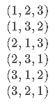
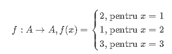
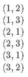

Mulțimi finite. Permutări. Aranjamente. Combinări. Binomul lui Newton.
Permutari
Din punct de vedere combinatorial, o permutare a unei mulțimi reprezintă o modalitate de a aranja secvențial elementele
acesteia. De exemplu, permutările mulțimii A={1,2,3} sunt:

Permutările unei mulțimi A pot fi privite de asemenea drept totalitatea funcțiilor bijective definite pe A, cu valori în A. Asta e
ușor de înțeles dacă ne gândim că f(x) nu trebuie să fie neapărat o expresie ce-l conține pe x, ci îl putem defini folosind o înșiruire
de pentru-uri. De exemplu, a treia permutare de mai sus reprezintă funcția:

Numărul permutărilor de ordin n (permutările unei mulțimi A cu n elemente) se notează cu P(n), și este egal cu n!.
(Amintesc că n! se citește n factorial și este egal cu 1⋅2⋅3⋯n.).
Aranjamente
Un aranjament de n elemente luate câte k, al mulțimii A de cardinal n, reprezintă o submulțime ordonată a lui A de k
elemente. De exemplu, aranjamentele de 3 luate câte 2 ale mulțimii A={1,2,3} sunt:

Combinări
Combinările de n elemente luate câte k, ale mulțimii A de cardinal n, reprezintă submulțimile cu k elemente ale lui A.
De remarcat că submulțimile nu sunt ordonate, ceea ce înseamnă că, în cazul combinărilor, submulțimile {1,2,3} și {2,3,1} nu sunt
diferite. De exemplu, combinările de 4 luate câte 3 ale mulțimii A={1,2,3,4} sunt: